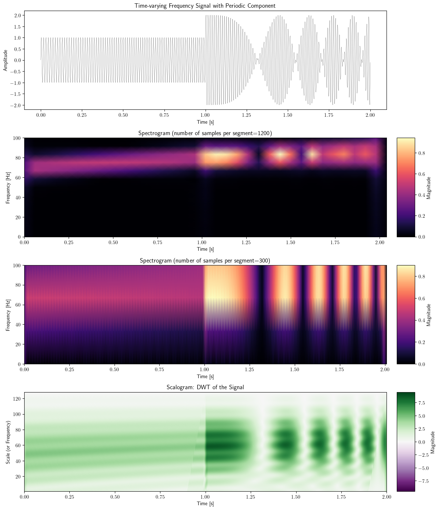

import numpy as np
import matplotlib.pyplot as plt
from matplotlib.gridspec import GridSpec
plt.rcParams['text.usetex'] = True
from scipy.signal import stft
import pywt
# 샘플링 주파수 및 시간 축 설정
fs = 10000
t = np.linspace(0, 2.0, 2 * fs, endpoint=False)
# 주파수가 선형적으로 증가하는 신호 생성
f0 = 70 # 시작 주파수
f1 = 90 # 종료 주파수
linear_chirp = np.sin(2 * np.pi * (f0 + (f1 - f0)/2 * t / 2) * t)
# 주기적인 진동 신호 생성
periodic_signal = np.sin(2 * np.pi * 80 * t) * (t > 1)
# 신호 합성
signal = linear_chirp + periodic_signal
# STFT 수행
f_1200, t_stft_1200, Zxx_1200 = stft(signal, fs, nperseg=1200)
f_300, t_stft_300, Zxx_300 = stft(signal, fs, nperseg=300)
# 웨이블릿 변환 수행
widths = np.arange(1, 128)
cwtmatr, freqs = pywt.cwt(signal, widths, 'cmor', sampling_period=1/fs)
# 그림 설정
fig = plt.figure(figsize=(12, 14))
gs = GridSpec(4, 2, width_ratios=[20, 1])
# 원 신호 플롯
ax0 = fig.add_subplot(gs[0, 0])
ax0.plot(t, signal, color='k', linewidth=0.2)
ax0.set_title("Time-varying Frequency Signal with Periodic Component")
ax0.set_xlabel("Time [s]")
ax0.set_ylabel("Amplitude")
# STFT 플롯 (nperseg=1200)
ax1 = fig.add_subplot(gs[1, 0])
stft_plot_1200 = ax1.pcolormesh(t_stft_1200, f_1200, np.abs(Zxx_1200), shading='gouraud', cmap='magma')
ax1.set_title("Spectrogram (number of samples per segment=1200)")
ax1.set_xlabel("Time [s]")
ax1.set_ylabel("Frequency [Hz]")
ax1.set_ylim(0, 100)
# STFT (nperseg=1200) 컬러바
cbar1 = fig.add_subplot(gs[1, 1])
fig.colorbar(stft_plot_1200, cax=cbar1, label='Magnitude')
# STFT 플롯 (nperseg=300)
ax2 = fig.add_subplot(gs[2, 0])
stft_plot_300 = ax2.pcolormesh(t_stft_300, f_300, np.abs(Zxx_300), shading='gouraud', cmap='magma')
ax2.set_title("Spectrogram (number of samples per segment=300)")
ax2.set_xlabel("Time [s]")
ax2.set_ylabel("Frequency [Hz]")
ax2.set_ylim(0, 100)
# STFT (nperseg=300) 컬러바
cbar2 = fig.add_subplot(gs[2, 1])
fig.colorbar(stft_plot_300, cax=cbar2, label='Magnitude')
# 웨이블릿 변환 플롯 (스칼로그램)
ax4 = fig.add_subplot(gs[3, 0])
wavelet_plot = ax4.imshow(np.abs(cwtmatr), extent=[0, 2, 1, 128], cmap='PRGn', aspect='auto', vmax=abs(cwtmatr).max(), vmin=-abs(cwtmatr).max())
ax4.set_title("Scalogram: DWT of the Signal")
ax4.set_xlabel("Time [s]")
ax4.set_ylabel("Scale (or Frequency)")
# 웨이블릿 컬러바
cbar4 = fig.add_subplot(gs[3, 1])
fig.colorbar(wavelet_plot, cax=cbar4, label='Magnitude')
plt.tight_layout()
# 그림 PDF로 저장
plt.savefig("/home/cgb2/Dropbox/03_Yechan3/연구/교수님이랑/MS_Review/cwt_signal_analysis.pdf")
# 그림 표시
plt.show()